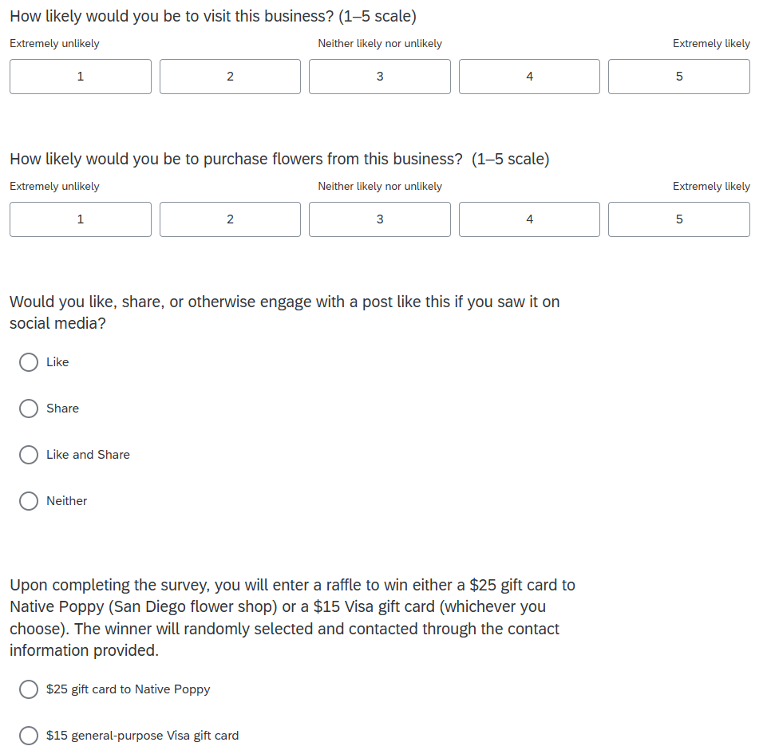

Consumer Behavior Analysis
EXPERIMENTAL DESIGN · STATISTICAL ANALYSIS
This randomized consumer experiment examines how alternative retail concepts influence purchasing intentions and willingness to visit an independent flower shop.
Experimental Design
This experiment compared three independent flower shop concepts: a traditional flower shop, a flower shop with a coffee lounge, and a flower shop with a regulated cannabis lounge.
What Participants Were Asked
SURVEY INSTRUMENT
After viewing their assigned concept, participants answered the same set of survey questions, covering likelihood to visit, likelihood to purchase, and engagement with a mock social media engagement.
- Visiting intentions: measured whether the concept increased consumer's likelihood of visiting the business.
- Purchasing intension: measured whether the concept influenced consumers' wilingness to purchase flowers from the business.
- Social engagement: measured whether the concept encouraged interaction with promotional content through likes, shares, or other social media engagement.

Together, these measure captured both behavioral intent and engagement, allowing the concepts to be compared across different stages on the consumer response.
As an incentive, respondents were entered into a raffle for either a $25 gift card to Native Poppy (a San Diego flower shop) or a $15 general-purpose Visa gift card.
Participant Profile & Group Balance
RANDOMIZATION & SAMPLE
Participants were randomly assigned to one of the three conditions in a between-subject design. Before analyzing the treatment effect, we compared the sample's demographic and behavioral characteristics across groups. Employment status and leisure time provided context for participants' potential time and opportunity to engage with each retail concept, while flower-purchasing and cannabis-related behaviors helped identify differences in prior familiarity with the product being tested. Overall, these characteristics were relatively similar across conditions.
Balance Table
Demographic and behavioral characteristics were broadly similar across the three groups. This supports the assumption that randomization produced comparable samples.
Results
STATISTICAL ANALYSIS
The analysis examined overall treatment effect and variation in consumer responses across the three retail concepts. I compared average visit intentions, response distributions, differences across subgroups, and the statistical power of the experiment.
Key questions answered: What flower shop enviornment generates the strongest consumer response? What's happening beneath the average? Did responses differ by type of consumer? How much confidence should we place in the null result?
Conclusion
Across the observed responses, the coffee lounge concept showed higher flower purchase intention than either the traditional flower shop or the regulated cannabis lounge concept; however, the treatment did not produce a statistically significant change in overall visit intention (F=1.51, p=0.23). Subgroup patterns also varied by consumer characteristics. This suggests that the aggregate result may mask differences in how consumers respond to each concept. Each condition had about 23-26 participants. A larger sample would be needed to determine whether these patterns represent meaningful treatment effect.